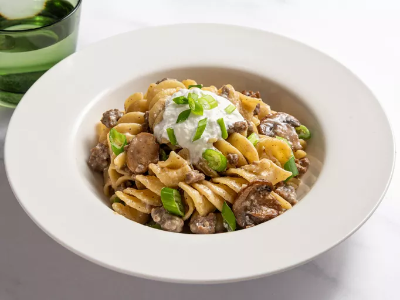

Ground Beef Strognaoff Noodles

Description
This recipe is a shortcut version of the classic
beef stroganoff in a one-pan version. This is
the ultimate comfort food with ground beef,
mushrooms, and egg noodles.
Ingredients
- 1 tablespoon unsalted butter
- 1 tablespoon vegetable oil
- 1 cup sliced mushrooms
- 1 teaspoon salt
- 1/2 cup diced onion
- 1 lbs ground beef
- fresh ground black pepper
- 1 pinch cayenne pepper
- 2 cloves minced garlic
- 1 and 1/3 tablespoons flour
- 2 tablespoons vodka
- 2 and 1/2 cups beef broth
- 1 cup water
- 2 and 1/2 cups egg noodles
- 1/2 cup sour cream
- 2 tablespoons fresh sliced chives
Steps
- Melt butter and oil in skillet over medium-high heat.
Add mushrooms, season with salt and saute until golden
brown.
- Add onion and ground beef. Cook until meat is browned and
crumbly and onions turn soft and translucent. Season with
pepper and cayenne.
- Stir in minced garlic and flour, and cook for 1 minute.
- pour in vodka and allow to evaporate
- Stir in beef broth and water. Bring to a simmer and cook for
10 minutes, stirring occasionally.
- Reduce heat to medium, and mix in noodles. Cover with lid and
simmer for 5 minutes. Uncover and stir. Cover again and cook until
noodles are tender.
- Reduce heat to low, and stir in sour cream.
- Serve with additional sour cream and chives if desired.